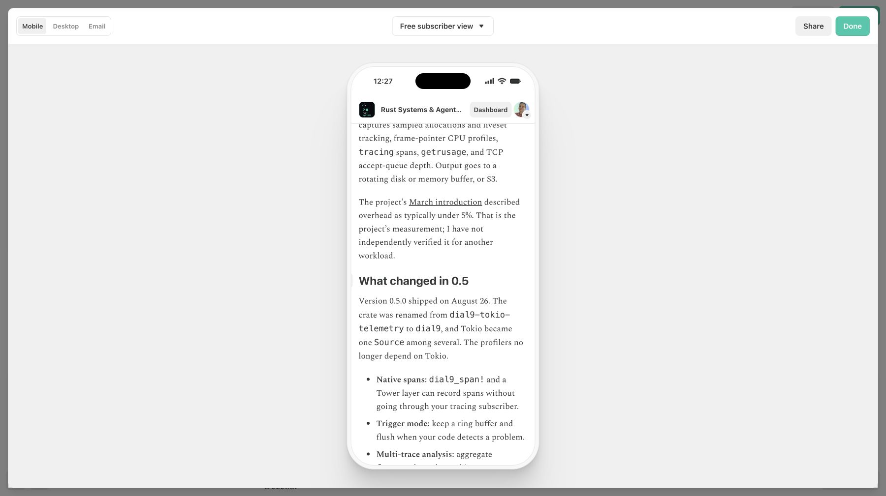
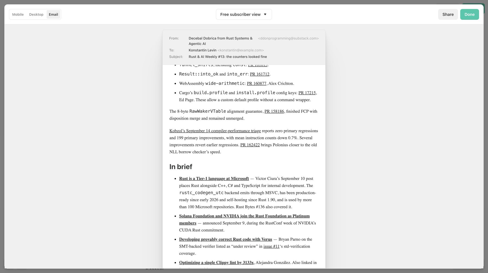

Readers can scan release details without a page-long paragraph
Issue #13 now separates the case, release changes, limitations, and adoption verdict. The MDX article, newsletter HTML, launch mirror, and syndication copy share the edit.
The longest source paragraph fell from 614 words to 55
| Measure | Before | After |
|---|---|---|
| Rendered body words | 4,370 | 2,837 |
| Longest paragraph | 614 words | 55 words |
| Paragraphs over 100 words | 13 | 0 |
| Distinct link destinations | 57 | 57, identical set |
Before: commit 610c8170265f07fe53dfd7cefa8046150a410c95. After: the commit containing this report; article blob 0523469286160ad9bd2263a4baddb47194c1c12e. Counts use the rendered Markdown body, excluding frontmatter; list items remain separate blocks.
Substack preserves the paragraph gaps and lists


The edited draft and source can be checked directly
- Open the full edited article or newsletter paste source. Pass: dial9 has release and coverage subheadings; each crate has separate maintenance, latest, and adoption bullets.
- Open the Substack editor and Preview → Mobile or Email. Pass: the new opening, feature bullets, and two loaded images appear.
- Compare the article with its launch HTML mirror. Pass: the same body is present, with absolute email links and the existing radar-image placeholder convention.
Saved edits and public updates are different states
The Substack editor showed Saved after reload and an Update action for an already-published post. Preview screenshots prove the saved edit's rendering; they alone do not prove the public post was updated. Publication status is recorded in the accompanying launch notes.
Visual checks cover what source counts cannot
Both mobile and email previews display real paragraph spacing, distinct list items, working headings, the 3D hero, and the radar image. Source checks preserve all 57 link destinations, the 80-tool radar and its verdict totals, the slug, and existing X thread text.
What I have not checked
No delivered-email client test was performed. Existing benchmark and historical-source qualifications remain in the article; this pass does not rerun benchmarks or resolve previously unverified claims. Already-delivered emails cannot be changed by updating the web post.